RP Coating – Advanced Software for
Designing Optical Multilayer Structures
| Start | Purpose | Model | Versions | Interface | Demos |
A Flexible Tool for Developing Laser Mirrors, Dispersive Mirrors, Filters and Polarizers
RP Coating V4 is a particularly flexible and powerful thin-film software tool for developing all kinds of optical multilayer structures. It is not limited to standard devices as conceived by the developer, but also gives the developer the power to analyze and optimize anything new. At the same time, it is extremely convenient for industry people who often need to quickly adapt designs to new parameter values: designs can be fully parameterized such that the whole structure can be controlled with a few parameters instead of a long list of layer thickness values.
Start with Simple Forms
There are various demo files, containing handy custom forms, with which you can very easily get started. See examples for a Bragg mirror and a GTI mirror:
When executing the calculation, you get various diagrams (not shown here). You can also get outputs displayed in the form. Further numerical outputs can appear in the output area on the right side.
A great feature is that those forms and calculations are not hard-wired: you obtain script files, in which you can easily modify the forms and calculations according to your specific needs! For example, you may introduce more optical elements to the resonator or create additional diagrams. And in case that things are getting too difficult for you, you will get very helpful technical support. You can get even complete new scripts made according to your informal description of what you need.
The Product Brochure
The following brochure explains the software in some detail:
- 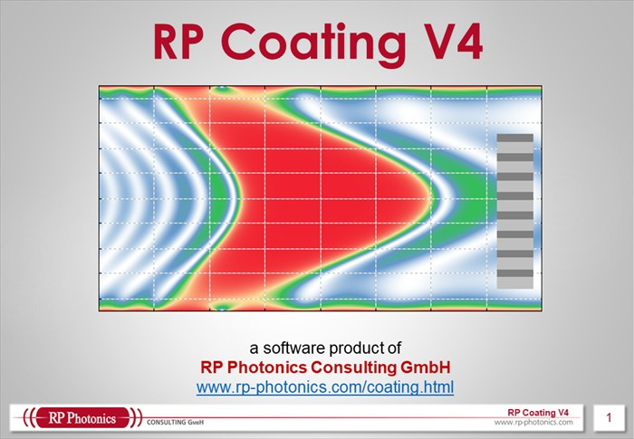
- 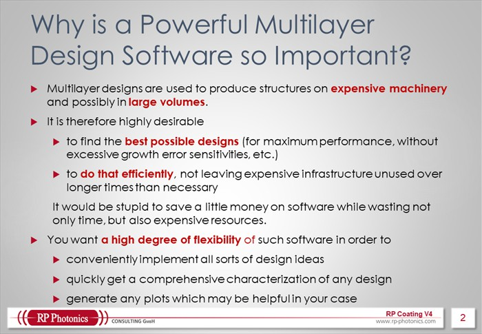
- 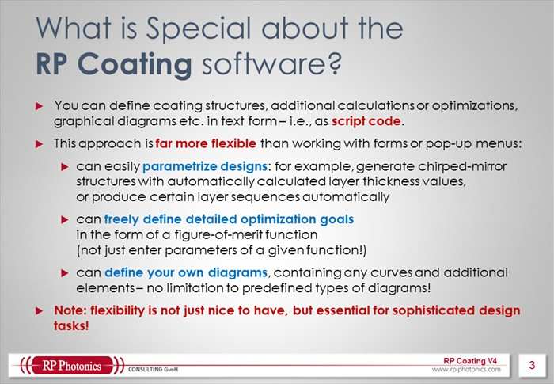
- 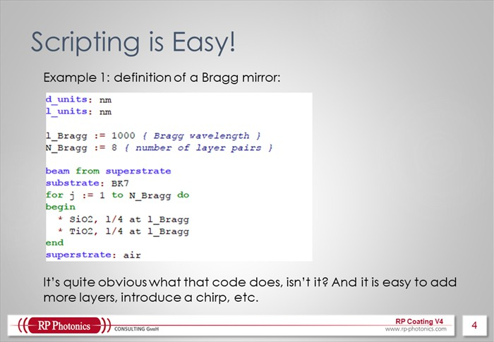
- 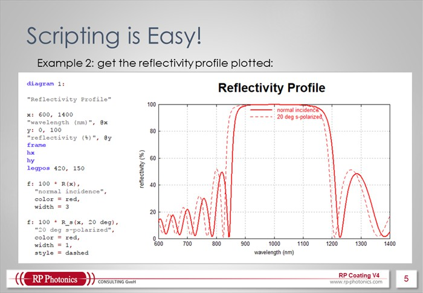
- 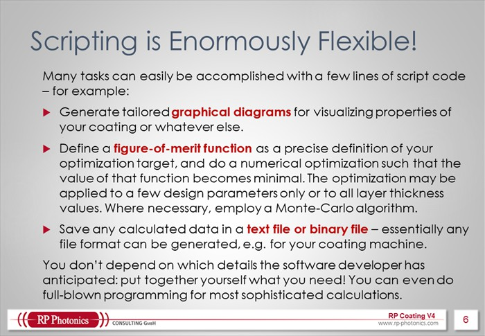
- 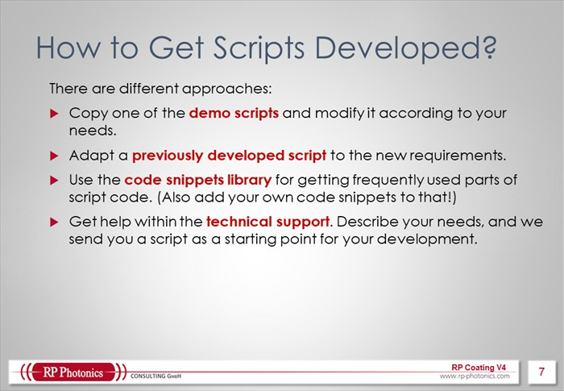
- 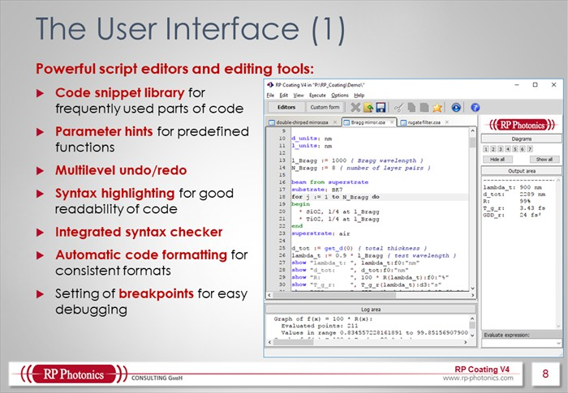
- 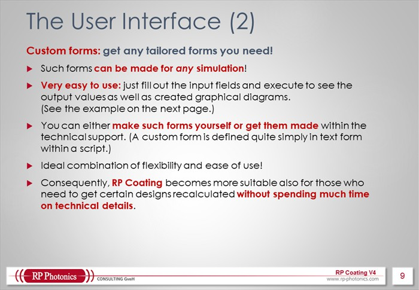
- 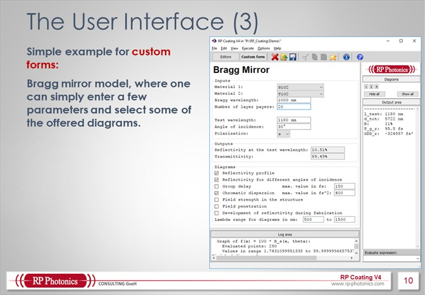
- 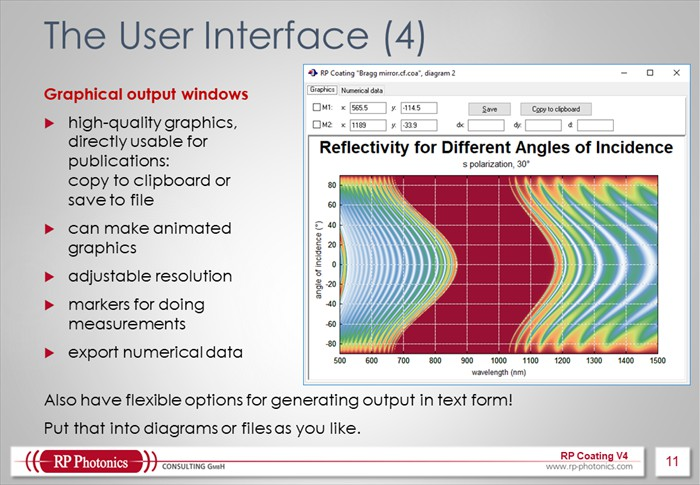
- 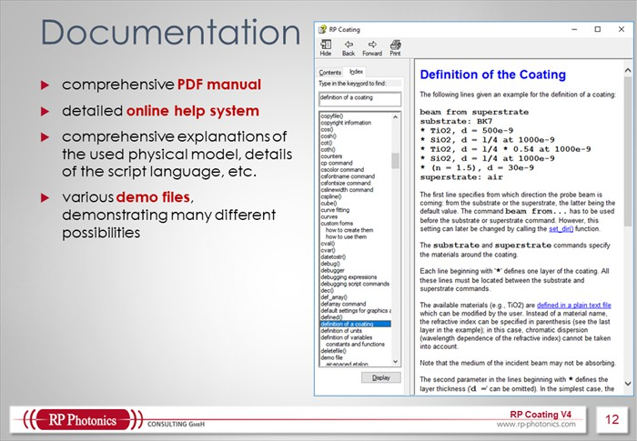

- 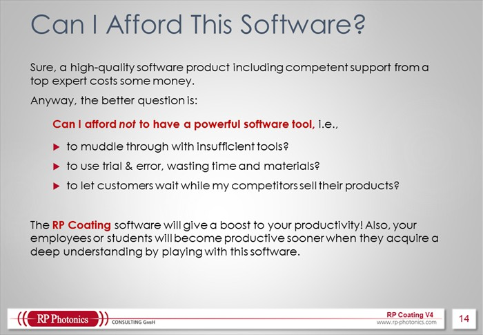
- 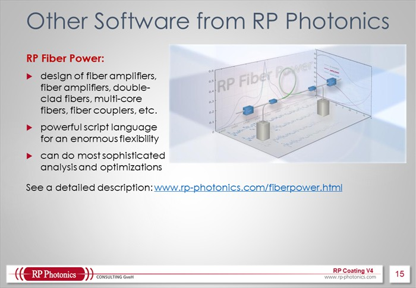
- 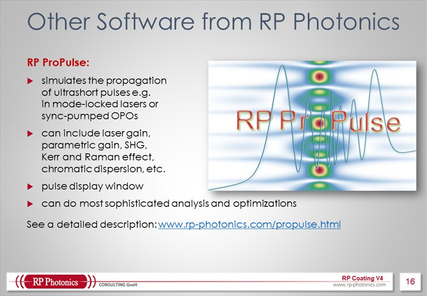
- 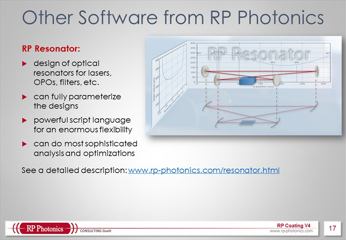
Note that you can flip the pages by clicking on the left or right side of the brochure display.
You can also download our brochure in PDF format.
Design Anything You Need!
RP Coating can be used, for example, to analyze and optimize the following kinds of thin-film devices:
- dielectric mirrors (laser mirrors), including chirped mirrors (e.g. most advanced double-chirped mirror designs with extremely high bandwidth) or other kinds of dispersive mirrors (e.g. GTIs)
- anti-reflection coatings, including advanced multilayer structures, found e.g. with a Monte-Carlo technique
- optical filters (short-pass and long-pass edge filters, band-pass filters, monolithic and air-spaced etalons, volume Bragg gratings, rugate filters and other types of interference filters)
- thin-film polarizers (plate polarizers, polarizing cubes)
- semiconductor structures, such as SESAMs, including saturable absorption characteristics, chromatic dispersion, etc., and also VECSEL gain structures
You may also define any other multilayer structures, for whatever purpose.
Main Features
- RP Coating offers different methods to define a thin-film multilayer structure. Apart from simply listing all layer materials and thickness values one by one, it is also possible to specify a structure with mathematical expressions (e.g. to calculate a chirped mirror structure according to a few given parameters). This allows you to fully parameterize your designs: you can control the whole design with a couple of parameters instead of a long list of layer thickness values. Another option is to read a structure from a file – with great flexibility concerning binary and text file formats.
- The program can calculate a large number of relevant properties of a multilayer structure, including its reflection and transmission amplitudes and phases (with a variable angle of incidence), chromatic dispersion, field distribution inside the structure, etc.
- There are material data for a substantial selection of materials. It is also no problem to add data for any additional materials, using essentially any kind of definition: tabulated data (refractive index versus wavelength), a Sellmeier formula or whatever may be more appropriate.
- The software allows for various kinds of optimizations. A figure of merit can be freely defined as a mathematical expression which may refer to arbitrary combinations of different properties, including fabrication error tolerances. (Note that competing products normally only allow you to modify parameters of a fixed type of figure of merit.) The optimization can be a local one or use a Monte-Carlo algorithm. It can affect all layer thickness values separately, or only some parameters which indirectly determine a layer structure.
- By fitting to experimental data, deviations from specified thickness values or material data can be calculated.
- All results can be shown graphically. The user can essentially define any kind of plot or color diagram, and not only select from a set of predefined diagrams.
- Also, results can be shown in text form: written into a special area in the software window, written into graphical diagrams or to text files. There is full flexibility concerning text or binary file formats. For example, you can read files from a spectrometer and write files for controlling your coating machine.
You will hardly find a competing software which is similarly flexible and suitable for such a wide range of applications.
More than 15 demo files are delivered the software, treating simple mirror structures as well as sophisticated optimizations.
If you have any further questions or need a quotation: